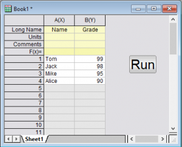

Skript mit einem Objekt verknüpfen
Associate-script-object
LabTalk-Skript von einem Textobjekt aus ausführen
Origin bietet auch die Möglichkeit, eine Schaltfläche zu einem Diagramm oder Arbeitsblatt hinzuzufügen und das LabTalk-Skript dann über diese Schaltfläche auszuführen. Dies erlaubt das Speichern des Skripts mit einem spezifischen Projekt oder Fenster.
- Klicken Sie auf die Schaltfläche Neue Grafik
 auf der Symbolleiste Standard, um eine neue Grafik zu erstellen.
auf der Symbolleiste Standard, um eine neue Grafik zu erstellen.
- Klicken Sie auf die Schaltfläche Text einfügen (
 ) auf der Symbolleiste Hilfsmittel und dann auf das neu erstellte Diagramm und geben Sie den Text Meine Schaltfläche ein. Klicken Sie außerhalb des Texts. um das Bearbeiten des Texts fertigzustellen.
) auf der Symbolleiste Hilfsmittel und dann auf das neu erstellte Diagramm und geben Sie den Text Meine Schaltfläche ein. Klicken Sie außerhalb des Texts. um das Bearbeiten des Texts fertigzustellen.
- Klicken Sie mit der rechten Maustaste auf den Text und wählen Sie Eigenschaften. Klicken Sie, um die Registerkarte Programmierung auszuwählen.
- Setzen Sie die Auswahlliste Kriterien für Skriptausführung auf Mausklick und geben Sie Folgendes im Bearbeitungsfeld ein:
-
type -b "Hello World";
- Klicken Sie auf OK, um den Dialog zu schließen. Jetzt verwandelt sich die Textbeschriftung in eine Schaltfläche. Klicken Sie auf die Schaltfläche. Ein Meldung mit "Hello World" wird angezeigt.
Weitere Informationen finden Sie unter LabTalk-Skript von grafischen Objekten aus ausführen.
Python-Skript von einem Textobjekt aus ausführen
- Öffnen Sie eine neue Arbeitsmappe.
- Wählen Sie das Hilfsmittel Text einfügen auf der Symbolleiste Hilfsmittel links vom Projektfenster.
- Klicken Sie auf den leeren Bereich im Arbeitsblatt (klicken Sie in den grauen Bereich rechts neben der letzten Spalte). Geben Sie Run im Textobjekt ein und klicken Sie auf eine Stelle außerhalb des Objekts. Sie haben jetzt eine Beschriftung für die Schaltfläche erstellt.
- Halten Sie die ALT-Taste gedrückt, während Sie doppelt auf das Textobjekt klicken, das Sie soeben erstellt haben. Der Dialog des Objekts wird auf der Registerkarte Programmierung geöffnet.
- Geben Sie im unteren Textfeld dieses Skript ein:
-
import pandas as pd import originpro as op data = {'Name':['Tom', 'Jack', 'Mike', 'Alice'], 'Grade':[99, 98, 95, 90]} df = pd.DataFrame(data) wks = op.find_sheet() wks.from_df(df)
- Setzen Sie die Auswahlliste Kriterien für Skriptausführung auf Mausklick und klicken Sie auf OK.
- Klicken Sie auf die Schaltfläche und importieren Sie die Daten in das Arbeitsblatt.
-

Weitere Informationen finden Sie unter Python von grafischen Objekten aus ausführen.